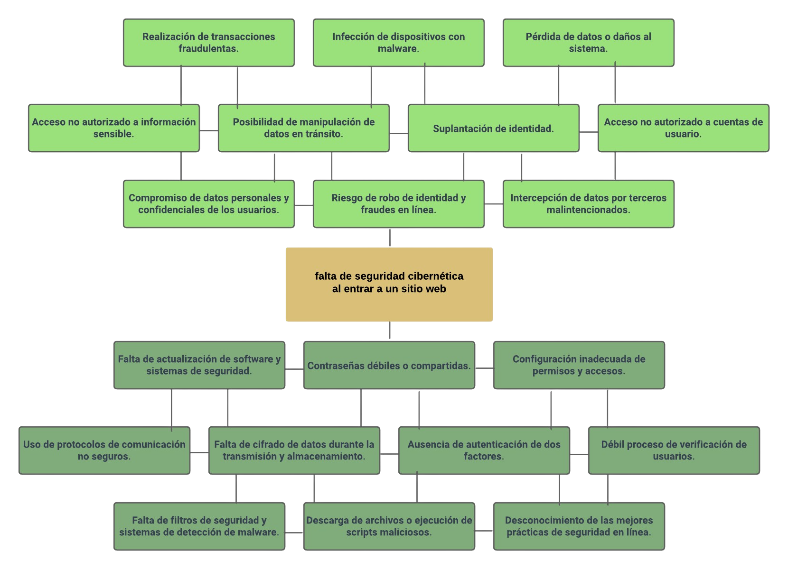

INICIO
PARTE I
PARTE II
CRÉDITOS
En esta primera parte se llevó a cabo la elaboración de un arbol de problemas abordando la problematica: "Falta de seguridad cibernetica en sitios web".
En el se observa sus causas en la parte inferior y sus efectos en la parte superior.
